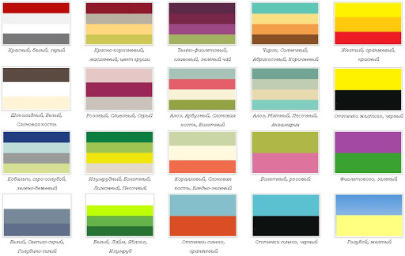

Элементы web-дизайна

Прежде всего, надо вспомним все основные элементы дизайна, благодаря которым сайту придаётся требуемый облик. Когда почти все параметры уже настроены, то достаточно просто подобрать оставшиеся. Однако когда необходимо сделать дизайн с чистого листа, то крайне сложно выбрать из массы настроек нужные. Как раз это умение отличает профессионала от начинающего.
Набор шрифтов. Обдумывая какой-либо дизайн, приходится думать о каждом элементе в отдельности и о том, как они сочетаются друг с другом. Первое, на что следует обратить внимание — набор шрифтов. Здесь главное правило – использование исключительно стандартных шрифтов. Сюда относятся Arial, Times New Roman, Tahoma, Sans-Serif, Verdana, Courier New. Иначе у пользователя указанный шрифт может отсутствовать, и тогда браузер воспользуется стандартными установками: Times New Roman для тела страницы и Arial для таблиц.
Фон страницы. Помимо шрифтов и набора картинок в web-дизайне не менее важным является фон страницы. В качестве фона можно выбрать однотонный цвет или какой-либо рисунок. При этом стоит помнить, что в настоящее время единственное достоинство графического фона – это его красочность. С другой стороны в современном сообществе дизайнеров есть такое мнение, что фон сайта должен состоять из одного цвета. Достаточно взглянуть на сайты известных компаний. При выборе фона должно главенствовать лишь одно правило – фон не должен лезть на первый план и отвлекать внимание пользователя, поэтому отдавать предпочтение необходимо приглушённым, почти прозрачным цветам.
Сочетание цветов. Это, можно сказать, важнейший этап разработки дизайна, которому зачастую уделяется слишком мало внимания. Нередко у дизайнов начинающих проектов встречается крайне необузданные сочетания цветов: как то, чёрный на тёмно-красном, зелены на ярко-красном и т.п. Таких сочетаний существует великое множество. Но если придерживаться одного простого правила, то этих сочетаний можно легко избежать.Цвет отдельных элементов страницы, её фон, фон таблиц и ячеек не должны перекрывать информацию. Дизайн не должен отвлекать внимание пользователя, все должно быть гармонично.